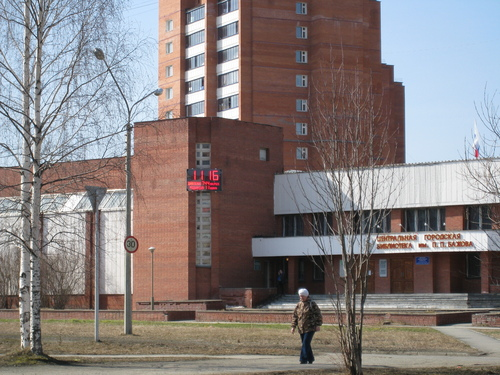

Библиотека Бажова
1957 г. Распоряжением по исполкому городского совета депутатов трудящихся от 22 апреля 1957 г. Грачева Любовь Леонидовна зачислена заведующей абонементом при городской библиотеке. Библиотека размещена в одной комнате площадью 25 кв. м. 24 сентября заведующей назначена Смагина Маргарита Анатольевна. 18 ноября библиотека приняла первых читателей.
1959 г. переход на новый метод обслуживания — открытый доступ читателей к фонду.
1960 г. Заведующая библиотекой Теляшова (Орешкина) Лидия Андреевна Библиотека занимает помещение из трех комнат общей площадью 280 кв.м. Штат библиотеки – 5 человек. Читателей – 3200 человек.
1963 г. Библиотека получила 2-х этажное здание по улице Ленина, 46, площадью 560 кв.м.
1967 г. Открыт юношеский абонемент
1970 г. Открыт отдел внестационарного обслуживания
1971 г. Работает клуб любителей поэзии
1973 г. Единственная библиотека системы, где действует Межведомственный библиотечный совет (МБС), который решает вопросы координации работы библиотек города. Отчет библиотеки, представленный в опорный методический центр библиотек системы, признан лучшим.
1976 г. Директором ЦГБ становится Березина Раиса Ильинична Первый городской праздник книги
1980 г. Выделены обменно-резервный и фонд книгохранения
1981 г. Внедрены новые формы обслуживания: клуб интересных встреч, совместная работа с дворовыми клубами, библиографический всеобуч, коллективные формуляры, паспорт чтения по школам. В годовом отчете появился раздел «Повышение квалификации библиотекарей» — каждый третий четверг в коллективе проходит техучеба, 2-й и 3-й – политчетверги.
1982 г. Внедрены циклы тематических радиопередач, передвижные выставки. В рамках работы по профориентации проводятся мероприятия Клуба интересных встреч.
1983 г. Внедрены в практику анализы чтения по предприятиям, учреждениям, в комсомольских организациях города. Проводятся выездные мероприятия: выступления на агитплощадках, диспуты и беседы в цехах.
1984 г. Эффективной формой работы являются бригадные и коллективные абонементы. При библиотеке работает литературно-музыкальный клуб «Книга открывает мир». Завершена работа по переводу фондов и каталогов на новые таблицы ББК.
1985 г. Создана единая регистрационная картотека на единого читателя силами восьми библиотек. Коллектив организует и принимает участие в работе пяти клубов и кинолектория «В семье растут дети» при кинотеатре.
1986 г. Присвоена 4 группа по оплате труда.
1987 г. Начало строительство нового здания библиотеки.
1988 г. Завершена работа по созданию межведомственной централизованной библиотечной системы. Библиотека имеет 5 филиалов: СУС. ЦМСЧ – 91, СПТУ, ЖЭК – 1, профилакторий. Коллектив активно работает по приближению книги в трудовые коллективы. Внестационарным обслуживанием охвачено 111 коллективов.
1989 г. 31 августа торжественное открытие нового типового здания библиотеки. Библиотеке присвоено имя Павла Петровича Бажова. Открыт отдел искусств.
1990 г. Создан поэтический клуб Любителей Изящной Словесности (ЛИС), который объединил городских поэтов. Основатели клуба: Александр Георгиевич Сырчин и Валентин Михайлович Ворошилов.
1992 г. Приобретен первый компьютер.
1993 г. Создан клуб любителей немецкого языка. Основатель и президент клуба Хорошенко Ольга Павловна.
1994 г. В январе-феврале ЦГБ переданы в качестве филиалов библиотеки ОЗК-25, совхоза «Таежный», поселка Елкино. Создан информационно — библиографический отдел. В мае передан фонд библиотеки ЦМСЧ-91, открыта кафедра медицинской литературы. На базе библиотеки впервые проведен отраслевой семинар-практикум библиотечных работников городов системы ЗАТО.
1995 г. Библиотеке присвоена 3 группа по оплате труда. Появилась новая библиотечная услуга – платный и залоговый абонемент. Работает клуб «Здравствуйте!», который объединяет последователей учения П. К. Иванова. При отделе искусств открыта студия дамских рукоделий «Шедевры из ничего».
Реорганизация обслуживания читателей: упразднен юношеский абонемент. Универсальный читальный зал разделен на тематические залы (гуманитарной и естественно – научной литературы), зал семейного чтения реорганизован в школьный отдел.1997 г. При отделе искусств создан клуб «Сакура», филиал Екатеринбургского отделения общества «Россия – Япония». Организатор – Карякина Ольга Константиновна. Библиотека стала Лауреатом областного смотра — конкурса работы библиотек по экологическому просвещению. Начата работа по двухгодичному курсу «Библиотечное дело» на базе учебно-производственного комбината (УПК). Автор программы и ведущая Кудрина Елена Дионисовна.
1998 г. ЦГБ им. П.П.Бажова по итогам областного конкурса “Путь к успеху” признана лучшей библиотекой области в городах с населением до 100 тыс. Создан клуб Коллекционеров при отделе искусств. Вышел сборник стихов местных поэтов «Лабиринты души». Работает лекторий «Космос-Бог». Создана локальная компьютерная сеть, что позволило перейти на работу с помощью АИБС «Марк». Прошли первые Христианские рождественские чтения.
1999 г. Создан информационный отдел. В ноябре начала свою работу Общественная приёмная. В структуре ЦГБ был выделен отдел регистрации читателей. Начал свою работу клуб «Огородник», организатор и руководитель Наумкина Татьяна Афанасьевна. Создан клуб «Вдохновение», объединяющий творческую интеллигенцию города. «Бажовка» стала центром первой на Урале международной выставки «MAIL ART», попав в международную сеть и зарубежные каталоги. ЦГБ им. П.П.Бажова признана по итогам областного конкурса “Путь к успеху” лучшей библиотекой области в городах с населением до 100 тыс. Появилась сетевая версия АИБС «МАРК». Началась активная работа по созданию электронного каталога. Создается БД «Читатель». К 200-летнему юбилею А. С. Пушкина проведена заочная читательская конференция. По итогам работы коллектив удостоен премии «Наш Пушкин» отдела культуры администрации города.
2000 г. Открыт справочно-регистрационный отдел. В ходе аттестации библиотечных работников успешно прошла защита авторских целевых программ развития по основным направлениям работы ЦГБ. Начата работа по программе «Чистота планеты – чистота души». Начата работа с беременными женщинами по программе «Эти 40 недель ожидания», автор и ведущая Гаврилова Ирина Николаевна. Вышла книга стихов «Душа моя, бродяга…» одного из основателей ЛИСов А. Сырчина. 19 марта состоялась презентация книги «Антология поэзии закрытых городов». На 5-ом областном конкурсе «Путь к успеху» библиотека признана лучшей среди малых городов области. Начала работу «Школа родительской любви». Автор и ведущая проекта Ткаченко Эльвира Рафаэловна. Прошла первая Ярмарка вакансий. Стали участниками корпоративного проекта СОУНБ им. В. Г. Белинского «Корпоративная сеть библиотек Урала». Проект получил грант ИОО («Фонд Сороса»).
2001 г. Совместно с СОУНБ им. В.Г. Белинского на базе ЦГБ им. П.П.Бажова впервые проводилось обучение специалистов библиотек области в «Школе библиотечного технолога». Начал работу сектор правовой информации в читальном зале гуманитарной литературы. Заработала программа «Милосердие», автор Айдочкина Валентина Викторовна. Библиотека получает по межбиблиотечному абонементу «говорящие книги» из библиотеки для слепых г. Екатеринбурга. Прошли первые Бажовские чтения. Диплом «За высокие достижения в области экологического просвещения» и звание лауреата Всероссийского смотра-конкурса работы библиотек по экологическому просвещению населения.
2002 г. Библиотека пос. Чащевита (филиал ЦГБ им. П.П. Бажова), открытая на деньги Ф. Павленкова, отметила свой 95-летний юбилей. В структуре читального зала № 2 был выделен сектор «Абитуриент». 25 декабря в читальном зале № 1 состоялось открытие компьютерного класса с доступом в Интернет. Приобретена программа администрирования Locer. Отдел искусств выпустил нотный сборник (впервые) с песнями о городе В. Струганова. Вручен Диплом Министерства природных ресурсов, Министерства культуры и Министерства образования РФ за высокие достижения в области экологического просвещения (за работу по программе «Чистота планеты – чистота души», автор Гаврилова Ирина Николаевна). В ноябре 2002 годы был заключен договор с ГПНТБ на приобретение системы ИРБИС. На базе библиотеки совместно с ЦМСЧ создана «Школа диабета».
2003 г. Активно идет освоение программы «ИРБИС. Сельская Павленковская библиотека поселка Елкино (филиал № 5) была признана лучшей сельской библиотекой области. Библиотека признана победителем областного краеведческого конкурса за «Концепцию краеведческой деятельности ЦГБ им. П. П. Бажова», план мероприятий по реализации концепции на 2003 г. и издательскую продукцию.
2004 г. Имя директора Березиной Раисы Ильиничны занесено в энциклопедию «Лучшие люди России», она стала лауреатом городской премии «Успех года – 2004». Открыта Бажовская комната. Осуществлен переход на использование программы ИРБИС. Совместно с ЦМСЧ открыта «Школа гипертоника». Участие в конкурсе «Молодые свердловчане в библиотечном деле». Проект «Деловое досье библиотекаря» Перевощиковой Марины Георгиевны был отмечен жюри дипломом лауреата и призом зрительских симпатий. Создан исторический клуб «Мы и время». Основатели клуба Татьяна Алексеевна Копосова и Ольга Павловна Хорошенко. Отдел обслуживания перешел на режим закрытого доступа, пользователи обслуживаются по требованию. За участие в радиопрограмме «Литературная студия» удостоена специального приза фонда «Новые региональные инициативы» Афанасьева Елена Петровна.
2005 г. На базе читального зала технической и естественно — научной литературы открыт сектор краеведческой информации. Компьютерный класс библиотеки не работает с 22 марта в связи с возбуждением в отношении библиотеки уголовного дела по ст. 171 и 146 УК РФ. На абонементе начал функционировать книгообмен «Частный фонд». Вышло распоряжение главы муниципального образования города Лесного «О формировании фонда документов местного самоуправления в ЦГБ имени Бажова».
2006 г. Осуществлена реорганизация структуры ЦГБ: на базе читального зала естественно — научной и технической литературы создан медиацентр с компьютерным классом. На абонементе возобновил работу сектор семейного чтения. Елена Петровна Афанасьева стала лауреатом премии «Камертон» за цикл радиопередач «Песни военных лет». 1 сентября дан старт марафону «Читай, Лесной!». При библиотеке создан и активно заработал Попечительский совет. В библиотеке работает клуб историко-ролевых игр «Серебряный клинок». Совместно с ЦМСЧ начала работать Коронарошкола.
2007 г. Библиотека отметила золотой юбилей. За огромный вклад в развитие культуры в городе Лесной звание «Почетный гражданин города» присвоено директору ЦГБ Березиной Раисе Ильиничне. С 1 июля директором библиотеки стала Алисова Елена Евгеньевна. 100-летие сельского филиала – Павленковской библиотеки поселка Чащевиты. 10-летие клуба «Сакура». Главный проект года марафон «Читай, Лесной!». В рамках проекта впервые прошли мероприятия: поэтический марафон, виртуальный опрос жителей города «Моя любимая книга», подиум-дискуссия «Телевидение. Книга. Интернет» и др. Коллектив ЦГБ стал победителем областного профессионального конкурса «Поколение.ru» в номинации «Проекты» за марафон «Читай, Лесной». Авторы Гаврилова Ирина Николаевна и Ткаченко Эльвира Рафаэловна. 23 января состоялась встреча с лётчиком-испытателем, полковником ВВС, кандидатом технических наук, Героем cоцтруда Мариной Лаврентьевной Попович. Презентация книги «Знакомые незнакомцы». Автором очерка о нашем городе «Здравствуй, Лесной!» в книге является библиотекарь отдела искусств Ольга Константиновна Карякина и давний друг библиотеки, поэт-бард Владимир Викторович Струганов. Выпуск сборника стихов поэтов города «Душа моя, поэзия» к юбилею города. Составитель – Хорошенко Ольга Павловна, редактор – начальник отдела культуры Кучур Вера Михайловна. Диплом участника научно-практической конференции «Homo legens» в Н.Тагиле за презентацию марафона «Читай, Лесной!». 21 октября открылся Зал семейного чтения. Начал работу клуб «Родовед». Основатель и руководитель Иордан Ирина Германовна.
2008 г. Библиотека реализовывает проект «Библиотечный десант». В рамках проекта опробованы новые формы привлечения к чтению и в библиотеку: информационный пробег с раздачей библиографической продукции библиотеки, выездные читальные залы «Книга едет в гости к Вам», дискуссионный кинолекторий, праздник улицы. 2 место за проект «Библиотечный десант» на областном конкурсе «Лучшее в библиотеках Свердловской области». Клубом «Родовед» при поддержке городской администрации провел общегородской конкурс «Родословное древо моей семьи». В рамках Года Н. В. Гоголя в большинстве школ города прошла театрализованная игра по повести «Тарас Бульба» — «Бранное, трудное время». В Пушкинский день России на библиотечной площади прошел митинг и поэтический праздник. 90-летию комсомола была посвящена встреча комсомольцев трех поколений со старшеклассниками. В рамках программы военно-патриотического воспитания активно ведется работа с войсковыми частями города. Прошла игра «Дорожкой фронтовой», в которой на игровом поле сражались команда ветеранов Великой Отечественной войны с командой военнослужащих. Начата работа по созданию книги Памяти – «Ратная Слава Лесного». При секторе правовой информации организована «Правовая школа» для учащихся старших классов. Автор проекта Хорошенко Ольга Павловна. Занятия в «Школе» библиотекари проводят вместе с представителями ОВД. Начат проект «Трезвый город». На медицинском секторе прошел цикл мероприятий, посвященных 90-летию российской фармации: выставка аптечных экспонатов «Атрибуты аптечного ремесла», викторина «Дела аптечные», праздничный вечер. Проведен праздник «Святое воскресенье». Лукьянова Инна Александровна провела мастер-класс по раскрашиванию пасхальных яиц. Создан клуб «Якташлар» по изучению традиций и обычаев татарского и башкирского народов. При клубе работает школа по обучению татарскому языку. 17 марта возобновлена работа компьютерного класса – пункта коллективного доступа к сети Интернет. Начали вести рубрику «Время читать!» в газете «Радар». Начала работу «Школа начинающего библиотекаря».
2009 г. Начал свою работу клуб «Компьютерный ликбез» при компьютерном классе для социально незащищенных слоев населения: неработающих пенсионеров, инвалидов, многодетных родителей. Организатор и ведущий занятий Никулина Ольга Отфридовна. 10-летний юбилей отметили клубы «Вдохновение» и «Огородник». Библиотека стала активно работать с женсоветом в/ч 32136. КВН «Однажды в библиотеке…» между молодежными организациями города. 12 апреля состоялась гоголевская ярмарка. Прошел фестиваль славянской письменности и культуры. Провели праздник семьи в парке города. Прошла игровая программа ко Дню защиты детей на площади у кинотеатра «Ретро».